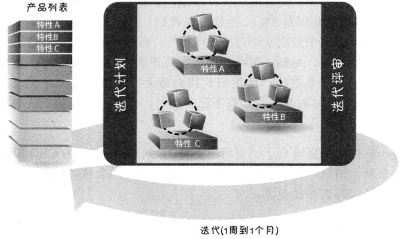
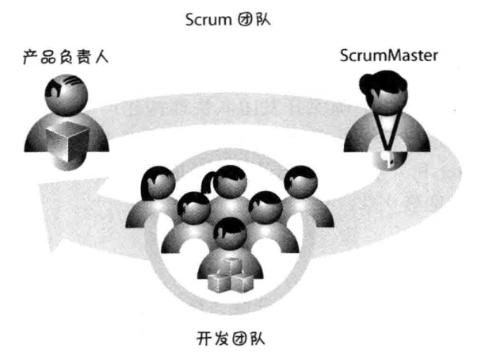
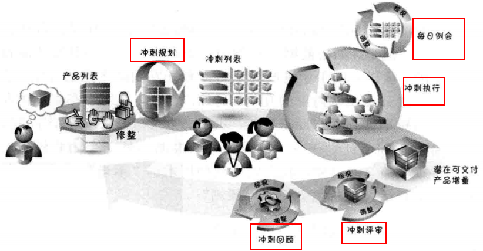
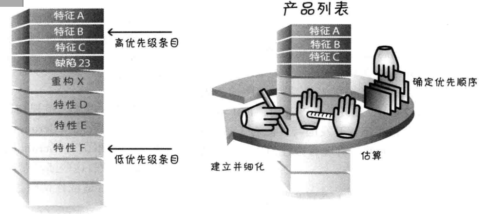
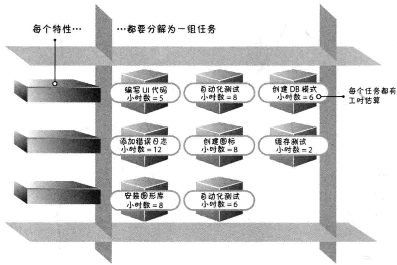

1 什么是Scrum
Scrum是橄榄球术语，表示犯规或求出界后重新开始比赛
Scrum是一种用于开发创新产品和服务的敏捷方式。

- 产品列表：按优先级排列、产品所需的特性和其他功能的列表，也叫User Story。
- 迭代周期位1周到1个月，一般为3周一个Sprint，每个周期包括设计、构建、测试。
- 每个迭代结束，应该有一个可发布的产品。
Scrum不是按照制定的规则解答开发过程中的问题，它是一种价值观，让团队有能力提出并解决自己的重大问题。Scrum框架建立在一套价值观、原则和实践之上，个团队可以根据具体实践添加特定的方法，形成自己的Scrum版本。
2 Scrum角色

产品负责人
有权决定要构建哪些特性并以何种顺序构建（即我的Nokia中看到的APO角色），并对产品解决方案全面负责。
scrum master
- 充当团队的教练，发挥教导作用，普及Scrum的价值观、原则和实践。
- 保护团队不受外界干扰，提高生产率
- Scrum master是领导者，不是管理者
开发团队
团队一般为5-9个人，包括：架构师（PA），程序员，测试、管理员，UI设计师等。负责产品设计、构建和测试。
3 Scrum活动
Scrum框架中的大部分活动如下：
冲刺又叫Sprint
Sprint过程
一个完整的Sprint的顺序活动为：
- 产品负责人牵头制定product backlog（产品列表），里面包含多个端到端的User story
- Sprint planning（冲刺规划）：制定并**commit（承诺）**本Sprint可以完成交付的User Story
- 每日例会：团队成员同步、检查和调整计划
- 完成了什么？
- 今天计划做什么？
- 有什么障碍，需要什么帮助？
- Sprint review（冲刺评审）：检查和调整正在构建的产品，参与者进行交谈，指导下一步的计划。
- Sprint Retro（冲刺回顾）：关注必须要的过程改进，并在下一个Sprint采用执行，帮助团队成长。
Product Backlog

冲刺列表
从Backlog中，选择一个User Story分解成任务，并估算每个任务完成需要的时间（按小时计算），保证团队成员可以保持可持续性的节奏完成这些任务。
怎么叫一个特性完成
完成的最低限度定义是：产出一个完整的产品功能，经过设计、构建、集成、测试并且编写了文档。